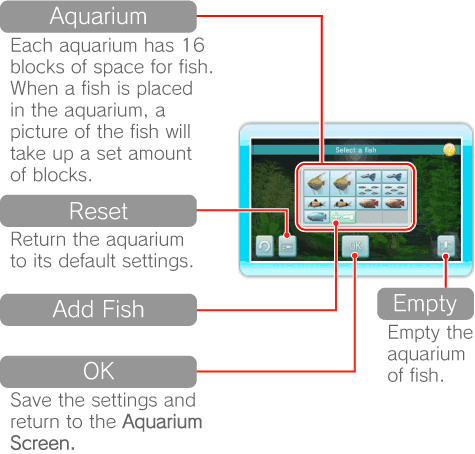

15 |
Aquarium Settings |
 |
|
Point at
Change the number and types of fish in your aquarium. The amount of fish you can stock is limited and is dependent on the size of the fish. When you are happy with your settings, select OK to confirm. 
Point at a block with a fish and press
 to increase or decrease the number of that fish in the aquarium. to increase or decrease the number of that fish in the aquarium.
Point at and press
Move and change ornaments, such as driftwood and rocks. When you are happy with the ornaments and their placement, select OK to confirm. Aquarium plants will be placed automatically for you. 
Point at an ornament and press to grab it. Point where you would like to place the ornament and press to place it. Ornaments can also be rotated using Note: When ornaments are highlighted red, they cannot be placed in that location.
Select |
 |
 |
 |